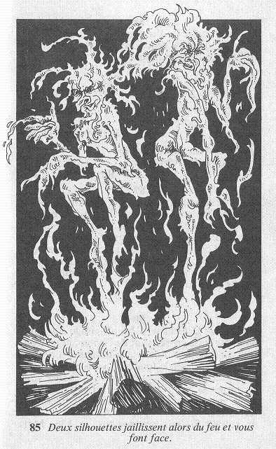

En pivotant, la petite figure de bois découvre un bouton. Alors que vous vous demandez si vous allez presser ce bouton, vous ne remarquez pas ce qui se produit dans la cheminée. Dans le foyer, le feu reprend vie : de longues flammes s'élèvent et la chaleur devient de plus en plus intense, à tel point que vous faites quelques pas en arrière. Deux silhouettes jaillissent alors du feu et vous font face.

Ces ESPRITS DU FEU sont de petite taille et ne vous arrivent qu'aux genoux, mais leur corps de flamme brûle avec la force du feu qui leur a donné vie. Ils voltigent au-dessus du tapis ; et tout ce qu'ils touchent s'enflamme instantanément. Si vous désirez les combattre . Sinon .